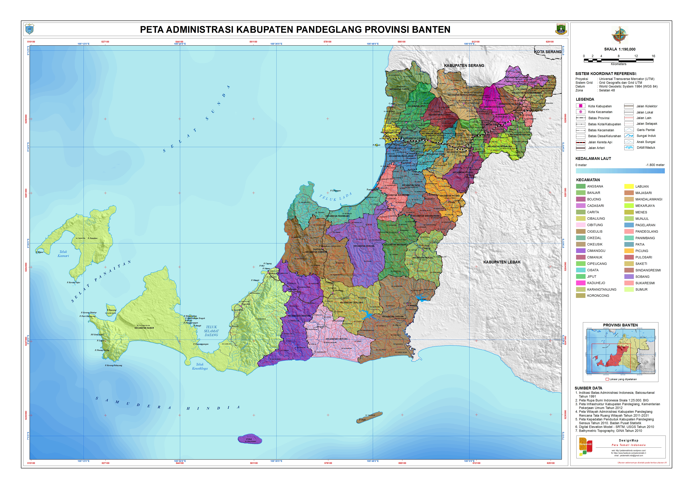

Geografis

Secara geografis, Kabupaten Pandeglang terletak di antara 6° 21' - 7° 10' Lintang Selatan dan 104° 48' - 106° 11' Bujur Timur. Kabupaten ini berada di ujung paling barat Pulau Jawa. Luas wilayah Kabupaten Pandeglang mencapai sekitar 2.747 kilometer persegi, menjadikannya salah satu kabupaten terluas di Banten.
Batas Wilayah
Batas wilayah administrasi Kabupaten Pandeglang adalah sebagai berikut:
- Utara: Berbatasan dengan Kabupaten Serang.
- Timur: Berbatasan dengan Kabupaten Lebak.
- Selatan: Dibatasi oleh Samudra Hindia.
- Barat: Dibatasi oleh Selat Sunda.
Topografi
Kondisi topografi di wilayah ini cukup bervariasi. Wilayah tengah dan timur didominasi oleh dataran tinggi dan pegunungan, termasuk Gunung Karang dan Gunung Pulosari. Sementara itu, bagian selatan dan pesisir barat merupakan dataran rendah yang landai, tempat di mana Taman Nasional Ujung Kulon berada.